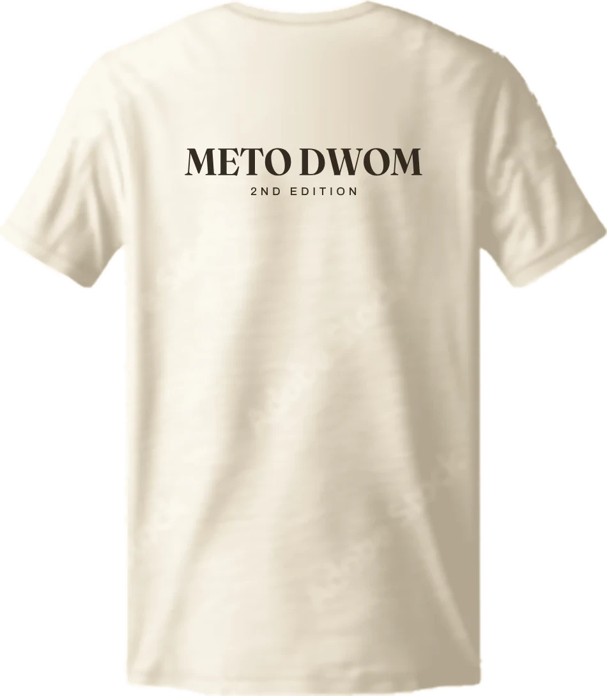
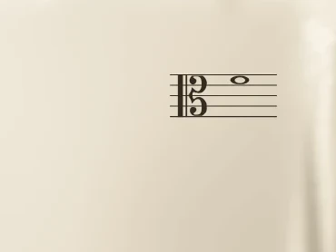
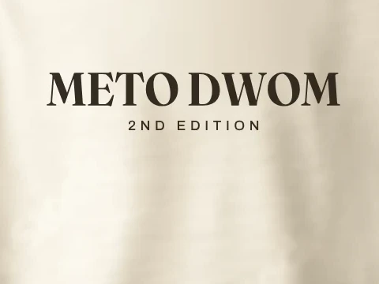

Apparel concept — 002
Meto Dwom
Second Edition · Front & back
A hymnbook in cloth. The alto clef and whole note mark the left chest; the wordmark carries the back. Three garment-dyed colourways, built as one-colour prints.
- 03
- colourways
- 02
- placements
- 300
- DPI artwork


01 / The design
A mark taken
from the score.
The mark is built from the alto clef and a whole note on a five-line staff — a small excerpt of music, lifted from the page and set in cloth.
Redrawn as a crisp single-colour vector, it holds at chest scale and on a printed spec sheet. Five lines, a barline, the clef, the note. Nothing more than the score needs.
On the front it sits alone above the left breast. The back is text only: METO DWOM, with the edition line tracked beneath. The restraint is the point: one ink, one mark, a garment that can carry the name quietly.
A small excerpt of music, set in cloth.

Left chest
3.25 in wide
Upper back
8.6 in wideShown in White. The print colour is matched to each garment in the range.
01 The mark
Alto clef, whole note, five staff lines. One ink, no gradients, and a silhouette that stays legible from a few feet away.
02 The type
METO DWOM is set in Fraunces; 2ND EDITION is tracked in Archivo. A quiet pairing with enough weight for a screen print.
03 The placement
Chest mark only on the front — no centre print. The back is the wordmark and edition line only. Placement measurements are in the print pack.
02 / Colourways
Three ways
to sing it.
Espresso on white, warm ecru on green, antique gold on blue. Select any colourway to bring it into the stage.
03 / Print ready
Ready for
the press.
Separate chest and back files, prepared as one-colour spot artwork. Transparent 300 DPI PNGs for the print floor and editable SVG for anything else.
- Chest mark
- 3.25 × 1.3 in
Wearer's left · 3.25 in from centre · 7 in below shoulder seam - Back wordmark
- 8.6 × 1.7 in
Centred · 3.25 in below collar seam - Artwork
- Solid spot colour · transparent background
300 DPI PNG + editable SVG - Inks
- Espresso · warm ecru · antique gold
One screen per shirt - Suggested blank
- Heavyweight garment-dyed tee
Comfort Colors 1717 or similar
Print at 100% scale. Do not enlarge from the mockup.
meto-dwom-print-pack.zip · 9 files · 3 inks · chest + back